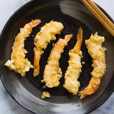

Shrimp Tempura

Description
Delicious crispy fried shrimp with tempura sauce. The tempura batter may be used for other recipes. Try it with vegetables.
Ingredients
- 1 box tempura batter
- 1 lb frozen shrimp
- 2 egg yolk
- 1/2 cup all-purpose flour
- 1/2 teaspoon salt
- 4 quarts oil
Directions
- Take out frozen shrimp half hour before starting
- Place shrimp in medium bowl with some ice
- Scrape shrimp tail with butter knife
- Squish each shrimp with 2 thumbs to break back
- Heat oil on med high heat
- Dip shrimp in egg yolk, then dip in flour/tempura batter mixture
- Slowly lay shrimp in oil. Cook each side up for a minute
- Remove and place on drying rack